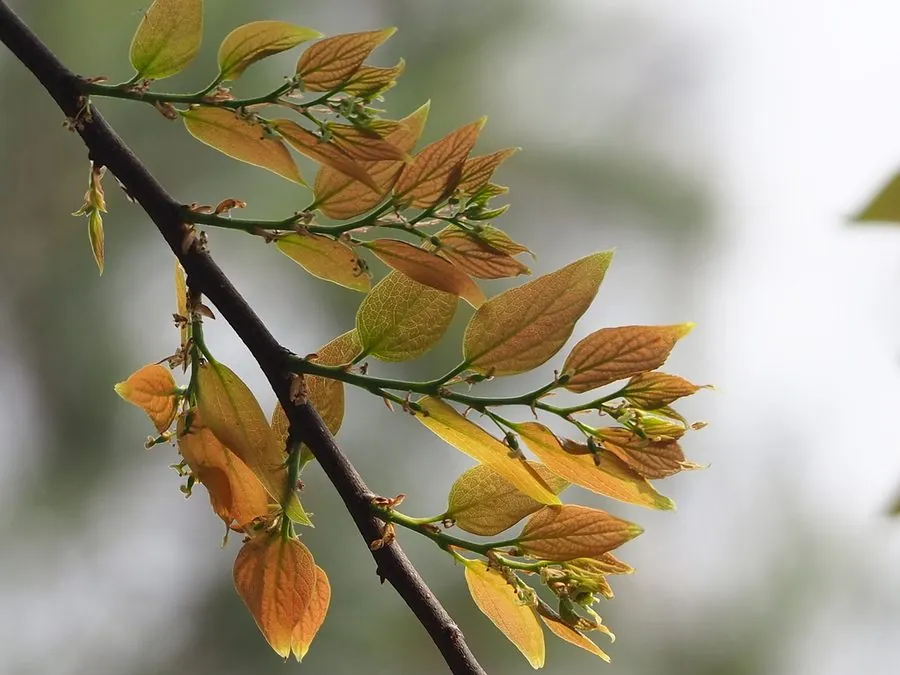

乔木 · 植物界
朴树 Celtis sinensis

中国南方常见的高大落叶乔木，树皮灰白光滑，果实小而圆、成熟时橙红色，是村旁与路边的乡土树种。
- 分类
- 门被子植物门纲木兰纲目蔷薇目科大麻科属朴属
- 栖息环境
- 海拔 1000 米以下的村旁、路旁、山坡与石灰岩山地，适应性强
- 地理分布
- 中国长江流域以南及河南、山东、陕西等地，朝鲜半岛、日本也有分布
- 保护级别
- 暂无评估；中国未列入国家重点保护野生植物名录
物种志
朴树为落叶乔木，高可达 20 m，树皮灰白色、平滑，老树基部纵裂；叶片卵形至卵状椭圆形，长 4–10 cm，边缘中部以上具锯齿，基部偏斜，叶面深绿。花期 4 月，花小、杂性同株，生于新枝叶腋；果实为核果，球形，直径 5–8 mm，成熟时橙红色或暗黄色，果柄细长，是鸟类喜爱的食物。
朴树分布于中国长江流域以南及河南、山东、陕西等地，也见于朝鲜半岛、日本，喜光、耐旱、耐瘠薄，对土壤要求不严，在村旁、路旁与石灰岩山地都能生长。木材纹理直，可供家具与农具用；树皮纤维可制绳、造纸；根皮与叶可入药；树冠宽广、枝叶繁茂，是优良的庭荫树与行道树。朴树也是制作盆景的常用树种，老桩苍劲，深受盆景爱好者喜爱。
形态与习性
- 株高可达 20 m，树皮灰白色
- 花期4 月，花小、杂性同株
- 果期9–10 月，核果橙红色
- 光照喜光，不耐长期荫蔽
- 水分耐旱，怕积水
- 土壤适应性强，耐瘠薄
- 主要用途庭荫树与行道树、盆景、树皮纤维制绳、根皮入药
趣味知识
- 朴树的果实小而圆，成熟时橙红色，常成串挂在枝头，是鸟类喜爱的食物。
- 朴树树皮灰白光滑，与榆树、榉树一起构成南方村落的乡土树群。
- 朴树老桩姿态苍劲，是制作盆景的常用树种，岭南盆景中尤为常见。
- 朴树叶片基部偏斜、中部以上有锯齿，是朴属植物的典型特征。